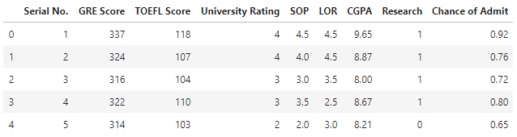
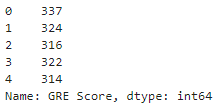

Overview of Pandas#
Learning Objectives#
- Describe the Pandas library and its main features.
Overview of Pandas#
It’s finally time to get our hands dirty with some data! In the remainder of this unit, we will learn how to load, view, and manipulate data. These tasks are prerequisites for any type of data analysis.
In this unit, and the rest of this course, we will use Python’s Pandas library. Pandas is one of the best and most commonly used packages for working with data. Pandas is an acronym that stands for “panel data”. The term panel data comes from economics and refers to datasets that contain observations over multiple time periods for the same entity. Pandas was originally developed by someone working with financial data and has since grown in size and scope to be an excellent, general-purpose library for manipulating data.
Pandas will be your “go to” library when working with data in Python. Typically, you will load your data into Pandas, clean it, manipulate it, and aggregate it, all in Pandas. You may use other libraries for plotting or statistical analysis, but the bulk of your work will be done in Pandas.
Why Use Pandas?#
Before we dive into the details, let’s talk about the reasons to use Pandas (or any other serious data manipulation library). The big reason to choose Pandas over Excel or Tableau Prep is that Pandas makes it easy to reproduce your work. With Pandas, you must write declarative code statements. You’re telling the computer exactly what you want it to do with your data. When you are done, you can view those steps. In other words, you can audit your work. That is not possible with Excel. In the past, after our students have completed big Excel projects, we ask them what steps they took. They usually don’t remember. If they had to reproduce their work, it would take them hours. This is problematic because they cannot determine whether they did their work correctly. Pandas, by nature, is easily auditable.
Another advantage over Excel is speed. When you have to work with hundreds of thousands, or millions, of rows, Excel will become very slow. Pandas will be much faster.
The Main Objects in Pandas#
The Pandas library contains two main objects (remember that term?), the DataFrame and the Series. Let’s briefly discuss these objects.
The DataFrame Object#
A DataFrame is a table of data. It contains cells that are organized into rows and columns. Each cell contains a single data value. The image below contains a snapshot of a DataFrame. We saved it as a picture so you cannot interact with it.

A DataFrame is analogous to an Excel worksheet, but with a few key differences. Where an Excel worksheet can have multiple blocks of data, charts, pivot tables, etc., a DataFrame must contain a contiguous block of data.
In the rest of this unit, we will show you how to:
Load data from Excel files and CSV files into a DataFrame.
View DataFrames, and pieces of DataFrames, in a Jupyter notebook.
Select and modify specific values from a DataFrame.
Select and modify specific rows from a DataFrame.
Select and modify specific columns from a DataFrame.
Create new columns that are transformations of existing columns.
Summarize data in DataFrames.
Plot data in DataFrames.
In subsequent units, we will show you how to do analyses (e.g. pivot tables) using data in DataFrames. Time permitting, we will show you how to merge data from multiple DataFrames.
The Series Object#
The Series object represents a column or a row of data. You can think of it as a vector or a list if that helps. You can also think of a DataFrame as a collection of columns, each of which are Series objects.
As you work with Pandas, you will discover that accomplishing most of the tasks described above (e.g. selecting rows from a DataFrame) requires you to work with Series. If that doesn’t make sense at this time, don’t worry. We’ll elaborate later.
Following is a snapshot of a Series object. Specifically, it’s a snapshot of the first column of the DataFrame shown above.

Learning Pandas on Your Own#
Pandas is a very powerful, but very complex library. It has myriad features and we will only teach you a small subset of those features. While we will show you most of what you need to know to complete the assignments for ACCY 570, it is likely you will need to learn new features when using Pandas on your own. Even in ACCY 570, it might not be obvious how to perform a task in Pandas. When you find yourself in that situation, you will likely start searching on the web.
We recommend you consult the following resources, in this order, before you start doing Google searches.
10 minutes to pandas. This is part of the official Pandas documentation. I have no idea why its authors think it will take 10 minutes. Prepare to spend at least 30! However, this guide does a good job of walking you through the basics of Pandas.
Pandas Cookbook. This is part of the official Pandas documentation and shows you the “right way” to accomplish common tasks in Pandas.
Python Pandas Tutorial. The web site TutorialsPoint is a great resource for Pandas and for programming in general. Their Pandas tutorial is well-organized and easy to follow.
Pandas course @ DataCamp. The website DataCamp has great classes on data science. Their pandas Foundations course is interactive and very well done. However, you have to pay (about \(\$30\) per month) and the course will take about 4 hours.
Official Pandas documentation.
The good news is that the documentation is comprehensive.
The bad news is that the documentation isn’t always easy to understand, and isn’t easy to search.
Do a Google search for a specific Pandas function, e.g. the first result in a Google search for “pandas dataframe sample” will lead you to the correct page at the Pandas documentation.
Do a general Google search. Chances are you will be taken to a page at the website Stack Overflow. Some of the advice there is excellent. Some isn’t very good.
Check the date of the post. The Pandas library has been updated many times in recent years and sometimes old code no longer works.